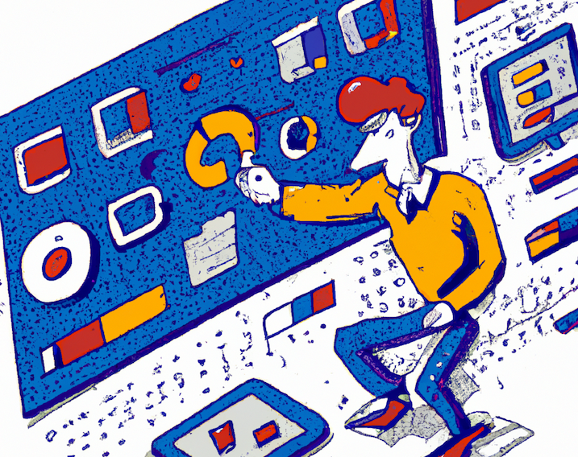

I work on AI + dev tools.
How bad do users want a feature in your software?
What if we could use good ole economics to answer the question? The supply of new features you can provide in your software is limited, so measuring the demand accurately is vital.
Let's think about how we could measure the demand for a feature...
We could ask users what they want. Interview or survey them. Take a poll and give them a few options. Or scrape forums and social media to see what they're already asking for. Maybe even show them a mockup and get their feedback. Do they say they can't live without it? These are all standard methods in a user researcher's toolbox.
The economics term for this is stated preference, what someone says they want. The problem is that stated preference often does not align with revealed preference, that is, what someone's actions reveal to be their preference. To put simply, just because a user says they want a feature doesn't mean they will actually use it. I've even written about my own experience where these did not align: When users never use the features they asked for.
If we had unlimited resources, we could release every feature imaginable then keep the ones that get sufficient usage and drop the others. But we don't.
A few years ago a paper was published, "Eliciting users' demand for interface features", that provides an economics perspective on measuring the demand for features. It describes a study where participants used a software system to make investments amongst many choices. If the participant performed well, they received a cash bonus.
The catch? Features of the software had a cost associated with them. Each feature was labeled with a cost of 0-9% that came out of the participant's bonus, which were randomly assigned for each participant. There were 5 different features they could use.
The results showed that the cost of the feature did impact the usage, but the feature usage also correlated with the participant's performance (and bonus). Most of the participants used the feature that had a 0% cost.
What does that mean? Participants were cautious about giving up their bonus to use the features, but there was value in using them. In other words, there was some cost-value analysis going on in the participants' mind to maximize performance while minimizing feature usage.
The interesting part of this paper is not the results (the task and software system are fairly artificial), rather it is the methodology to measure feature demand by applying an upfront cost to individual features in a user interface while participants are attempting to maximize performance on a task.
Imagine applying this method to a more complex system with a more realistic task. Want to Google something? $1. Want to use copy-paste? $0.25. Each time you save your file, it costs you a nickel. Bug a coworker on Slack? $50. It would give new insights into what users value!
Let's not stop there though.
What if we apply surge pricing? As you repeatedly use a feature in a short period of time, the price ramps up. At some point we will find out how much you actually cherish Stack Overflow when you can no longer afford it and have to go read documentation instead!
We can put a textbox on the participant's screen that displays how much money they have remaining to complete the task. Start them off at some reasonable amount, say $25, and tell them they get to keep whatever is leftover after they successfully complete the task. Participants would certainly behave differently! It reminds me of that competitive cooking show, Cutthroat Kitchen, from a few years ago where participants could spend their potential prize money on sabotaging the other contestants.
I'll add this demand-eliciting study method to my user research toolbox. We can adapt the method in other ways too, like it doesn't have to be a $$$ cost. It could be time. How long will users wait to use that feature? Since computers were much slower not that long ago, it doesn't sound that farfetched of a study anymore when you think of feature usage in relative cost of time!
What other concepts from economics could we apply to the design and evaluation of user interfaces? Why do users often choose to stick with what they know instead of investing in learning how to use a new feature? Why do they keep retrying an action while expecting a different outcome? How could they be nudged to take the optimal path through your UI? Maybe we could investigate how availability bias, remembered utility, opportunity cost, sunk cost, illusion of validity, etc. could be understood in this context.
In grad school I got really into reading about behavioral economics. Here are some of the notable books:
I hope to try running a study like this soon. I'll let you know how it goes!